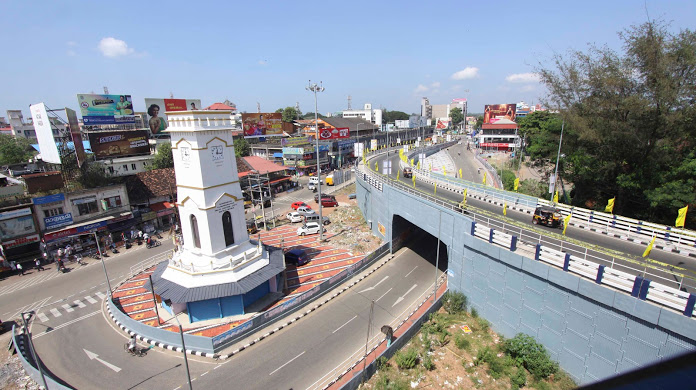
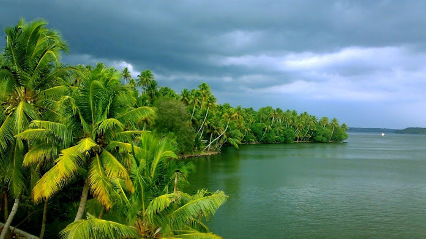
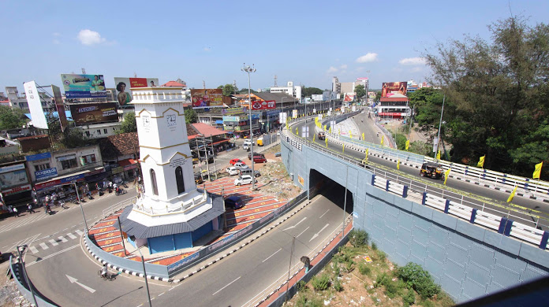
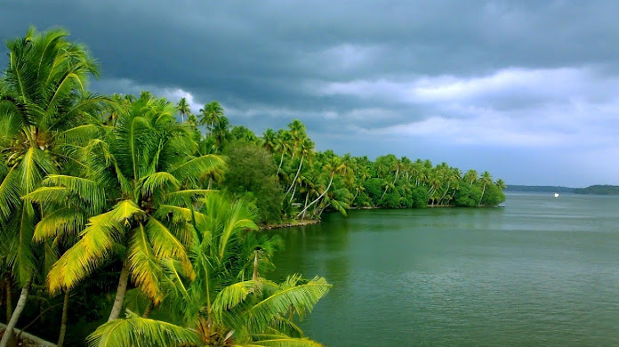

Located around 71km towards the north of Trivandrum, Kollam is one of the most kaleidoscopic backwater destinations in Kerala. A pristine tourist destination along the Malabar Coast, this port city in God’s Own Country is located along the serene Ashtamudi Lake and is thronged by a large number of backwater travellers from all over the world.While this pictorial city boasts of its myriad list of offerings to the visitors, the pristine Ashtamudi Lakes entices the backwater enthusiasts to plunge into the houseboats and manoeuvre across them. The city also has a large number of the hotels and resorts that offers exciting backwater experience in Kerala. If you are searching for some of the best backwater destinations in Kerala, you should plan a Kerala trip soon, and visit this pictorial city along the banks of the Ashtamudi Lake. To note here, Kollam also has a large number of waterways that connects it to some of the other most popular backwater destinations in Kerala..